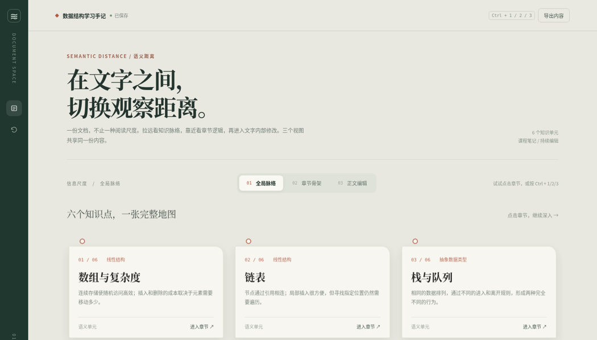
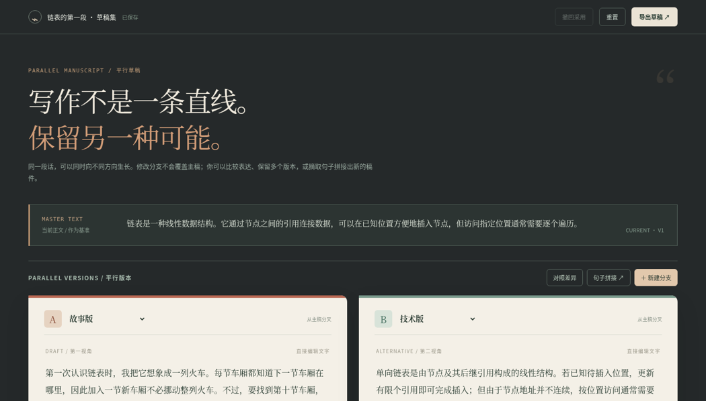
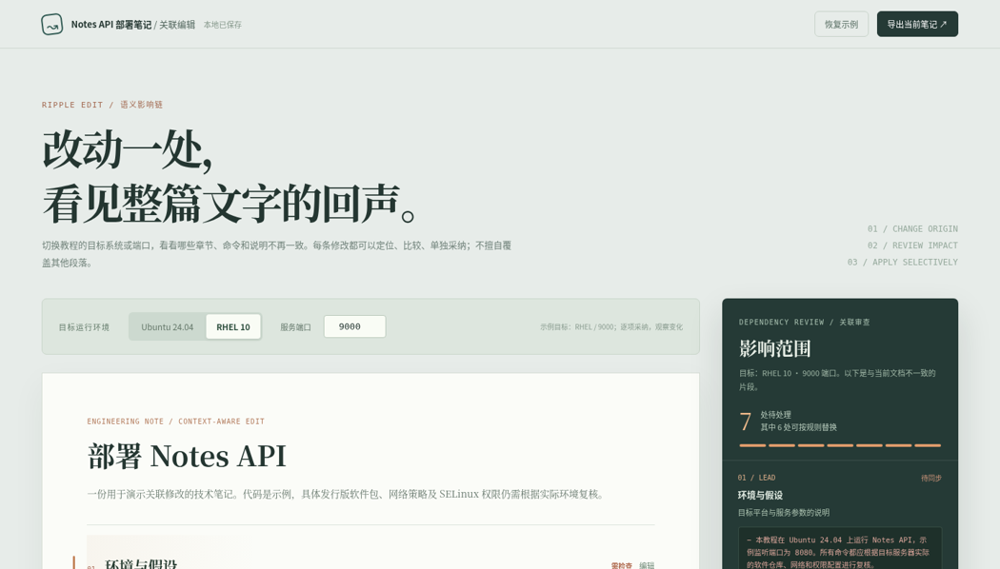

EXPERIMENT 01文
THREE INTERACTIVE CONCEPTS / 2026WRITING INTERFACE EXPERIMENTS
文字，还可以
怎样被编辑？
三个独立可运行的交互实验：探索文字的信息尺度、写作分支与语义依赖。它们不试图重新实现 Typora 或 Notion，而是各自验证一种不同的编辑行为。
三个独立可运行的交互实验：探索文字的信息尺度、写作分支与语义依赖。它们不试图重新实现 Typora 或 Notion，而是各自验证一种不同的编辑行为。

EXPERIMENT 01
EXPERIMENT 02
EXPERIMENT 03改变部署平台或端口，找出全文受影响的说明与命令。逐项比较、定位并选择采纳，不自动掩盖风险。